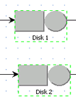
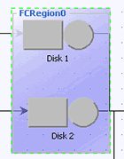
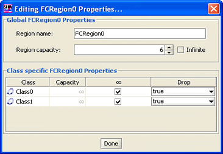

________________________________________
A Finite Capacity Region is a region of the model where the number of customers is controlled.
It is possible to define two types of FC region capacity constraints:
Shared: an upper bound for the number of customers that are in the region, regardless of the classes they belongs to.
Dedicated: an upper bound for the number of jobs for a specific customer class in the region
At simulation-time, the most restrictive constraint is applied. For example consider a multiclass model with two classes (Class1 and Class2) with a Shared constraint of 100 customers, a Deficated constraint of 30 customers for Class1 and no Dedicated contraint for Class2. If during the simulation the queue contains 30 customers belonging to Class1 and 60 customers belonging to Class2, an incoming job of Class1 will be rejected (as it's Dedicated constraint is violated) while an incoming job of Class2 will be accepted (as it will not exceed the Shared constraint). If the initial state was 20 jobs of Class1 and 80 jobs of Class2 an incoming job will always be rejected, despite of its class, as it would violate the Shared constraint.
How to define a FCR:
Select the stations to include in the region with the mouse: left-click with the mouse and hold it pressed until all the elements are included. The station selected are framed in green, like in the example 
select the icon and the Finite Capacity Region will appear with a blue background.

double click on FCRegion to set the properties. The properties panel will appear:

Global Properties
Region Name: the name of the region created
Region Capacity: max number of customers that can be in the region. Enable Infinite if you don't want a bound.
Class Specific Properties
In the bottom part of the panel theclass specific properties can be defined. Here you can define each class capacity as infinite or as defined, in same way stated above for FCR capacity, and choose the dropping property of the class.
Capacity: maximum number of customers of that class into the FCR.
Drop: when the FCR is busy, and Drop is "false", the incoming jobs are not dropped but are put into a temporary queue, until the FCR can accept them., otherwise they are dropped from the network.
NOTE: is not possible to create nested or overlapping regions.